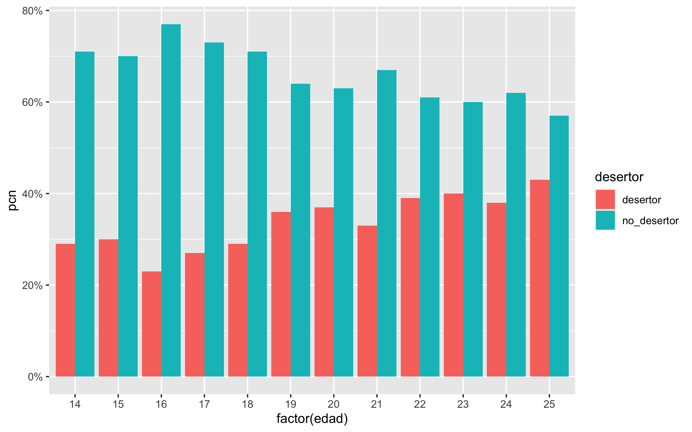

3 Estadísticos descriptivos del Abandono Escolar
Empezaremos este ejercicio dividiendo nuestra encuesta, en dos set de datos uno para el entrenamiento y otro para la prueba, por ese motivo decidimos separa la base usando un muestreo estratificado debido a que las muestra no es balanceada.
Decidimos guardar 30% como datos de prueba, siendo 3,696 y usar el restante 8,621 como datos de entrenamiento, usar el 30% de los datos de entrenamiento para hacer validación cruzada, quedando como sigue:
| Division | Total | % |
|---|---|---|
| Prueba | 3,696 | 30% |
| Entrenamiento | 8,621 | 70% |
Posteriormente la muestra de entrenamiento se subdivide, para crear espacio para la muestra de validación cruzada.
| Division | Total | % |
|---|---|---|
| Entrenamiento | 6,034 | 70% |
| Validación Cruzada | 2,587 | 30% |
sin embargo subdividiremos estos, toda vez que vamos a guardar algunos de los datos para hacer validación cruzada.
set.seed(2021)
encuesta_part_inicial <- initial_split(encuesta, strata = desertor, prop = 0.70)
encuesta_total <- training(encuesta_part_inicial)
encuesta_part_val <- validation_split(encuesta_total, prop = 0.70)
encuesta_part_val$splits## [[1]]
## <Training/Validation/Total>
## <6034/2587/8621>3.0.1 Limpieza, exploración y análisis conceptual
Primero vamos a establecer que la variable desertor es la que estamos buscando, esta toma dos valores, 1 si el estudiante desertó y 0 si no lo hizo.
Podemos observar que se cuenta con 32% de desertores y 68% no desertores en la encuesta.
set.seed(2021)
entrena <- training(encuesta_part_val$splits[[1]])
nrow(entrena)## [1] 6034entrena%>% count(desertor) %>%
mutate(pcn = round(n / sum(n),2))## # A tibble: 2 × 3
## desertor n pcn
## <fct> <int> <dbl>
## 1 desertor 1993 0.33
## 2 no_desertor 4041 0.673.0.2 Resumen general
library(skimr)
skim(entrena)| Name | entrena |
| Number of rows | 6034 |
| Number of columns | 119 |
| _______________________ | |
| Column type frequency: | |
| character | 2 |
| factor | 114 |
| numeric | 3 |
| ________________________ | |
| Group variables | None |
Variable type: character
| skim_variable | n_missing | complete_rate | min | max | empty | n_unique | whitespace |
|---|---|---|---|---|---|---|---|
| ageb | 0 | 1 | 4 | 4 | 0 | 417 | 0 |
| id | 0 | 1 | 16 | 16 | 0 | 4901 | 0 |
Variable type: factor
| skim_variable | n_missing | complete_rate | ordered | n_unique | top_counts |
|---|---|---|---|---|---|
| edo | 0 | 1 | FALSE | 32 | Mex: 796, CDM: 491, Ver: 459, Sin: 368 |
| sexo | 0 | 1 | FALSE | 2 | Ho: 3027, Mu: 3007 |
| ins | 0 | 1 | FALSE | 2 | Si: 5352, No: 682 |
| ultimo | 0 | 1 | FALSE | 9 | Pr: 3492, Pr: 826, Ba: 769, Se: 692 |
| actual | 0 | 1 | FALSE | 4 | Si: 2108, -1: 1581, De: 1378, Te: 967 |
| f21 | 0 | 1 | FALSE | 2 | Ci: 4041, Ti: 1993, Cu: 0 |
| p1 | 0 | 1 | FALSE | 5 | Pr: 3825, Ba: 1100, Ot: 775, Ca: 323 |
| p4 | 0 | 1 | FALSE | 95 | No: 2745, No: 1007, NS: 578, 80: 256 |
| p6 | 0 | 1 | FALSE | 9 | Pú: 5468, Pr: 344, In: 147, No: 48 |
| p7 | 0 | 1 | FALSE | 5 | Ni: 5281, Un: 368, Do: 310, Tr: 63 |
| p8 | 0 | 1 | FALSE | 4 | -1: 5293, No: 517, Si: 203, NS: 21 |
| p9_1 | 0 | 1 | FALSE | 2 | No: 5431, Sí: 603 |
| p9_2 | 0 | 1 | FALSE | 2 | No: 4964, Sí: 1070 |
| p9_3 | 0 | 1 | FALSE | 2 | No: 4870, Sí: 1164 |
| p9_4 | 0 | 1 | FALSE | 2 | No: 4926, Sí: 1108 |
| p9_5 | 0 | 1 | FALSE | 2 | No: 5968, Sí: 66 |
| p9_6 | 0 | 1 | FALSE | 2 | No: 5786, Sí: 248 |
| p9_7 | 0 | 1 | FALSE | 2 | No: 5864, Sí: 170 |
| p9_8 | 0 | 1 | FALSE | 2 | No: 5998, Sí: 36 |
| p9_9 | 0 | 1 | FALSE | 2 | No: 5314, Sí: 720 |
| p9_10 | 0 | 1 | FALSE | 2 | No: 5851, Sí: 183 |
| p9_11 | 0 | 1 | FALSE | 2 | No: 5535, Sí: 499 |
| p9_12 | 0 | 1 | FALSE | 2 | No: 5868, Sí: 166 |
| p9ot | 0 | 1 | FALSE | 59 | -1: 5868, Co: 24, Co: 14, Te: 9 |
| p10h | 0 | 1 | FALSE | 4 | 0: 5261, 1: 647, NS: 77, 2: 49 |
| p10m | 0 | 1 | FALSE | 50 | 30: 1434, 20: 1003, 15: 816, 10: 531 |
| p11_1 | 0 | 1 | FALSE | 15 | El: 2384, Po: 1127, La: 370, Me: 298 |
| p11_2 | 0 | 1 | FALSE | 15 | Po: 784, El: 753, Ti: 699, La: 553 |
| p11_3 | 0 | 1 | FALSE | 15 | 0: 740, Po: 551, -1: 542, Ti: 509 |
| p12_1 | 0 | 1 | FALSE | 2 | No: 5938, Si: 96 |
| p12_2 | 0 | 1 | FALSE | 3 | Si: 5572, No: 366, -1: 96 |
| p12_3 | 0 | 1 | FALSE | 3 | Si: 4996, No: 942, -1: 96 |
| p12_4 | 0 | 1 | FALSE | 3 | No: 5766, Si: 172, -1: 96 |
| p12_5 | 0 | 1 | FALSE | 3 | Si: 4762, No: 1176, -1: 96 |
| p12_6 | 0 | 1 | FALSE | 3 | No: 5130, Si: 808, -1: 96 |
| p12_7 | 0 | 1 | FALSE | 3 | No: 5906, -1: 96, Si: 32 |
| p12_8 | 0 | 1 | FALSE | 3 | No: 5888, -1: 96, Si: 50 |
| p12_9 | 0 | 1 | FALSE | 3 | No: 5881, -1: 96, Si: 57 |
| p12_10 | 0 | 1 | FALSE | 3 | No: 5885, -1: 96, Si: 53 |
| p12_5cts | 0 | 1 | FALSE | 16 | 2: 1687, 1: 1573, -1: 1272, 3: 865 |
| p12_6cts | 0 | 1 | FALSE | 16 | -1: 5226, 1: 352, 2: 256, 3: 67 |
| p12_7cts | 0 | 1 | FALSE | 8 | -1: 6002, 2: 13, 1: 7, 3: 4 |
| p12_8cts | 0 | 1 | FALSE | 4 | -1: 5984, 1: 37, 2: 12, NS: 1 |
| p12_10ts | 0 | 1 | FALSE | 10 | -1: 5981, 1: 22, 2: 16, 3: 5 |
| p13_1 | 0 | 1 | FALSE | 5 | Na: 1672, Al: 1654, Po: 1547, Mu: 1095 |
| p13_2 | 0 | 1 | FALSE | 5 | Al: 1820, Mu: 1605, Po: 1414, Na: 1162 |
| p13_3 | 0 | 1 | FALSE | 5 | Na: 1610, Al: 1568, Po: 1446, Mu: 1288 |
| p13_4 | 0 | 1 | FALSE | 5 | Mu: 3025, Al: 1251, Na: 842, Po: 690 |
| p13_5 | 0 | 1 | FALSE | 5 | Mu: 4032, Al: 1035, Po: 457, Na: 433 |
| p13_6 | 0 | 1 | FALSE | 5 | Mu: 2093, Al: 1888, Po: 1175, Na: 833 |
| p13_7 | 0 | 1 | FALSE | 5 | Mu: 2099, Al: 1474, Na: 1115, Po: 1094 |
| p14 | 0 | 1 | FALSE | 5 | Si: 3480, T: 2115, Fa: 318, Fa: 79 |
| p15 | 0 | 1 | FALSE | 47 | 8: 1238, 7: 500, 9: 439, 99.: 438 |
| p16 | 0 | 1 | FALSE | 5 | Al: 2884, Nu: 2299, Re: 644, Re: 143 |
| p17 | 0 | 1 | FALSE | 6 | [E: 2264, Mi: 2073, Mi: 965, M: 569 |
| p18 | 0 | 1 | FALSE | 3 | No: 4809, Si: 1188, NS: 37 |
| p19 | 0 | 1 | FALSE | 33 | -1: 4846, El: 475, El: 295, La: 162 |
| p23_1 | 0 | 1 | FALSE | 2 | NO: 3231, SI: 2803 |
| p23_2 | 0 | 1 | FALSE | 2 | NO: 5290, SI: 744 |
| p23_1cts | 0 | 1 | FALSE | 24 | -1: 3231, 2: 647, 1: 534, 3: 508 |
| p23_2cts | 0 | 1 | FALSE | 9 | -1: 5290, 1: 491, 2: 182, 3: 48 |
| p25_1 | 0 | 1 | FALSE | 5 | -1: 3694, No: 1119, Pr: 917, Se: 204 |
| p25_2 | 0 | 1 | FALSE | 5 | -1: 3694, No: 2102, Se: 116, Pr: 77 |
| p25_3 | 0 | 1 | FALSE | 5 | -1: 3694, No: 2052, Pr: 164, Se: 94 |
| p25_4 | 0 | 1 | FALSE | 5 | -1: 3694, No: 1964, Pr: 165, Se: 135 |
| p25_5 | 0 | 1 | FALSE | 5 | -1: 3694, No: 2245, Pr: 37, Se: 37 |
| p25_6 | 0 | 1 | FALSE | 5 | -1: 3694, No: 1934, Se: 207, Pr: 109 |
| p25_7 | 0 | 1 | FALSE | 5 | -1: 3694, No: 1935, Se: 190, Te: 141 |
| p25_8 | 0 | 1 | FALSE | 5 | -1: 3694, No: 2120, Se: 110, Te: 81 |
| p25_9 | 0 | 1 | FALSE | 5 | -1: 3694, No: 2256, Se: 34, Te: 31 |
| p25_10 | 0 | 1 | FALSE | 5 | -1: 3694, No: 2211, Se: 56, Te: 50 |
| p25_11 | 0 | 1 | FALSE | 5 | -1: 3694, No: 2128, Te: 111, Se: 71 |
| p25_12 | 0 | 1 | FALSE | 5 | -1: 3694, No: 2258, Te: 42, Se: 27 |
| p25_13 | 0 | 1 | FALSE | 5 | -1: 3694, No: 2176, Se: 70, Te: 56 |
| p25_14 | 0 | 1 | FALSE | 5 | -1: 3694, No: 2086, Pr: 137, Se: 88 |
| p25_15 | 0 | 1 | FALSE | 5 | -1: 3694, No: 2286, Te: 26, Se: 17 |
| p25_16 | 0 | 1 | FALSE | 5 | -1: 3694, No: 2260, Te: 33, Se: 32 |
| p25_17 | 0 | 1 | FALSE | 5 | -1: 3694, No: 2214, Te: 50, Se: 39 |
| p25_18 | 0 | 1 | FALSE | 5 | -1: 3694, No: 2045, Pr: 152, Se: 97 |
| p25_19 | 0 | 1 | FALSE | 5 | -1: 3694, No: 2261, Te: 46, Pr: 17 |
| p25_20 | 0 | 1 | FALSE | 5 | -1: 3694, No: 2258, Te: 46, Se: 27 |
| p25_21 | 0 | 1 | FALSE | 5 | -1: 3694, No: 2273, Se: 29, Te: 26 |
| p25_22 | 0 | 1 | FALSE | 5 | -1: 3694, No: 2270, Te: 44, Se: 19 |
| p25_23 | 0 | 1 | FALSE | 5 | -1: 3694, No: 2261, Pr: 44, Se: 22 |
| p27 | 0 | 1 | FALSE | 3 | No: 4482, Sí: 1540, NS: 12 |
| p29 | 0 | 1 | FALSE | 6 | -1: 4494, Me: 702, Ap: 349, Du: 269 |
| p30 | 0 | 1 | FALSE | 68 | -1: 4494, 200: 215, NS: 115, 150: 108 |
| p39 | 0 | 1 | FALSE | 14 | 3: 1995, 2: 1894, 4: 854, 1: 473 |
| p40_1 | 0 | 1 | FALSE | 2 | Si: 5897, No: 137 |
| p40_2 | 0 | 1 | FALSE | 2 | Si: 4758, No: 1276 |
| p40_3 | 0 | 1 | FALSE | 2 | Si: 5597, No: 437 |
| p40_4 | 0 | 1 | FALSE | 2 | Si: 5741, No: 293 |
| p40_5 | 0 | 1 | FALSE | 2 | No: 5224, Si: 810 |
| p40_6 | 0 | 1 | FALSE | 2 | Si: 4616, No: 1418 |
| p40_7 | 0 | 1 | FALSE | 2 | No: 3668, Si: 2366 |
| p40_8 | 0 | 1 | FALSE | 2 | Si: 3354, No: 2680 |
| p40_9 | 0 | 1 | FALSE | 2 | No: 3263, Si: 2771 |
| p40_10 | 0 | 1 | FALSE | 2 | Si: 5443, No: 591 |
| p40_11 | 0 | 1 | FALSE | 2 | Si: 3299, No: 2735 |
| p40_12 | 0 | 1 | FALSE | 2 | No: 3852, Si: 2182 |
| p40_13 | 0 | 1 | FALSE | 2 | Si: 5406, No: 628 |
| p40_14 | 0 | 1 | FALSE | 2 | No: 5157, Si: 877 |
| p40_15 | 0 | 1 | FALSE | 2 | No: 3592, Si: 2442 |
| p41a | 0 | 1 | FALSE | 5 | No: 4399, Un: 632, Má: 409, Un: 302 |
| p41b | 0 | 1 | FALSE | 5 | No: 3982, Un: 1141, Do: 579, Un: 255 |
| p41c | 0 | 1 | FALSE | 5 | No: 5859, Un: 106, Do: 25, Má: 25 |
| p41d | 0 | 1 | FALSE | 4 | No: 5988, Un: 37, Do: 6, Má: 3 |
| p41e | 0 | 1 | FALSE | 4 | No: 6013, Un: 19, Do: 1, Un: 1 |
| p41f | 0 | 1 | FALSE | 5 | No: 5997, Un: 24, Do: 8, Má: 3 |
| p41g | 0 | 1 | FALSE | 4 | No: 5988, Un: 35, Do: 6, Má: 5 |
| p41h | 0 | 1 | FALSE | 5 | No: 6007, Un: 23, Do: 2, Un: 1 |
| p41i | 0 | 1 | FALSE | 5 | No: 5995, Un: 29, Do: 6, Má: 3 |
| desertor | 0 | 1 | FALSE | 2 | no_: 4041, des: 1993 |
| n_mun | 0 | 1 | FALSE | 312 | Eca: 180, Mér: 161, Izt: 139, Cul: 132 |
Variable type: numeric
| skim_variable | n_missing | complete_rate | mean | sd | p0 | p25 | p50 | p75 | p100 | hist |
|---|---|---|---|---|---|---|---|---|---|---|
| loca | 0 | 1 | 24.26 | 123.76 | 1 | 1 | 1 | 1 | 1799 | ▇▁▁▁▁ |
| edad | 0 | 1 | 18.93 | 2.92 | 14 | 17 | 19 | 21 | 25 | ▇▇▆▅▅ |
| p5 | 0 | 1 | 24.67 | 8.50 | 1 | 20 | 24 | 31 | 45 | ▁▃▇▅▂ |
3.0.3 ¿El género influye?
En la siguiente tabla puede ver que parecen ser números muy similares, es decir, se observa que mientras el 33% de los hombres desertan, el 31% de las mujeres lo hacen.
Incluso pensaría que el porcentaje de mujeres que sería superior pero los datos indican lo cotrario, la tasa de deserción de mujeres es ligeramente menor que la de los hombres.
entrena %>% select(sexo, desertor) %>%
group_by(sexo, desertor) %>%
tally() %>% mutate(pcn = round(n/sum(n),2))## # A tibble: 4 × 4
## # Groups: sexo [2]
## sexo desertor n pcn
## <fct> <fct> <int> <dbl>
## 1 " Hombre" desertor 1046 0.35
## 2 " Hombre" no_desertor 1981 0.65
## 3 " Mujer" desertor 947 0.31
## 4 " Mujer" no_desertor 2060 0.693.0.4 Entendiendo la Edad
Se puede observar un aumento de la deserción conforme aumenta la edad. Esto es comprenseible, porque conforme pasan los años, las personas tienen menos oportunidades de regresar a continuar con sus estudios.
entrena %>% select(edad, desertor) %>%
group_by(edad, desertor) %>%
tally() %>% mutate(pcn = round(n/sum(n),2)) %>%
ggplot(aes(factor(edad), pcn, fill = desertor)) +
geom_col(position = "dodge") + scale_y_continuous(labels = scales::percent_format())
3.1 Variables claramente importantes (hipótesis):
- lead time (cuánto tiempo de anticipación en la reserva),
- tipo de depósito (que tiene un nivel de “Non-refundable”),
- historial de cancelaciones,
- tipo de hotel
- tipo de cliente
tabla_univariada <- function(datos, variable, target){
datos %>% count({{ variable }}, {{ target }}) %>% group_by({{ variable }}) %>%
mutate(prop = n / sum(n)) %>% mutate(prop = round(prop, 3)) }
tabla_univariada(encuesta, p5, desertor)## # A tibble: 86 × 4
## # Groups: p5 [43]
## p5 desertor n prop
## <dbl> <fct> <int> <dbl>
## 1 1 desertor 39 0.534
## 2 1 no_desertor 34 0.466
## 3 2 desertor 4 0.8
## 4 2 no_desertor 1 0.2
## 5 3 desertor 5 0.455
## 6 3 no_desertor 6 0.545
## 7 4 desertor 1 0.5
## 8 4 no_desertor 1 0.5
## 9 5 desertor 4 0.8
## 10 5 no_desertor 1 0.2
## # … with 76 more rowsencuesta %>% select(p5) %>% arrange()## # A tibble: 12,317 × 1
## p5
## <dbl>
## 1 28
## 2 37
## 3 17
## 4 24
## 5 22
## 6 19
## 7 31
## 8 21
## 9 45
## 10 11
## # … with 12,307 more rowsunique(encuesta$p5)## [1] 28 37 17 24 22 19 31 21 45 11 9 20 26 29 16 10 33 23 27 32 15 35 44 5 13
## [26] 14 30 25 34 36 38 1 3 12 6 39 18 8 7 2 40 41 4Lineamientos para la elaboración de indicadores educativos↩︎